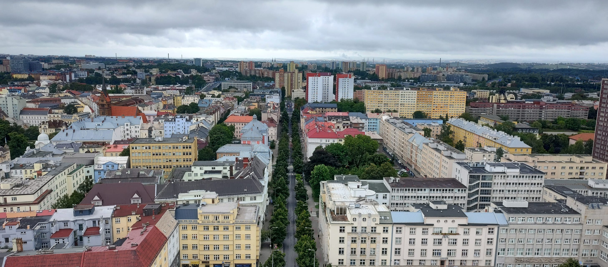
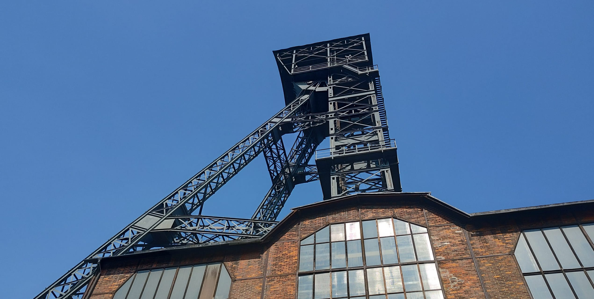

La Región de Moravia-Silesia es una unidad administrativa (kraj) de la República Checa. Se sitúa al noroeste de la región histórica de Moravia y comprende también las partes checas de Silesia. Limita con la Región de Olomouc (en el oeste) y la Región de Zlín (al sur), así como con Polonia al norte y Eslovaquia al este. La capital es Ostrava.
Vista de la ciudad de Ostrava capital de la región
Por la región han pasado durante miles de años caminos comerciales (por ejemplo el del ámbar desde el Báltico al Adriático). Desde el surgimiento de los primeros sistemas estatales medievales de los Premislidas, Moravia era junto con Silesia parte del país llamado la Corona Checa.
Mina Hlubina
Es la región industrial por excelencia de Republica Checa y enriquecio rapidamente gracias a la industria del carbón y el acero. Hoy día los turistas van buscando su arquitectura industrial y sus montañas.